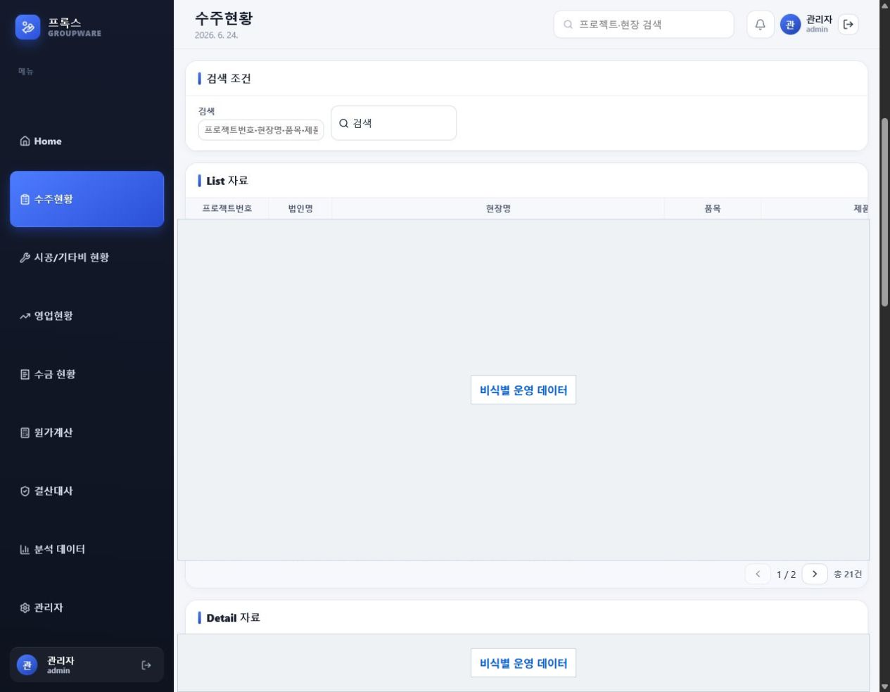
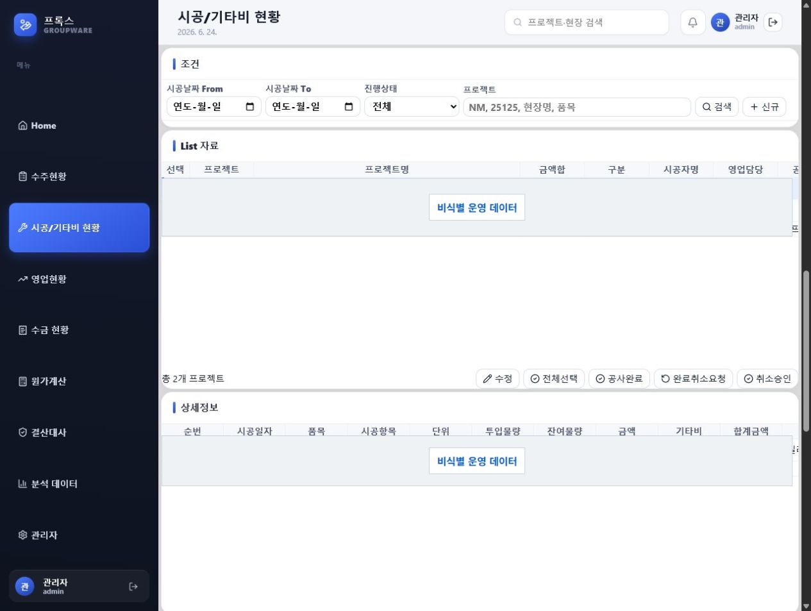
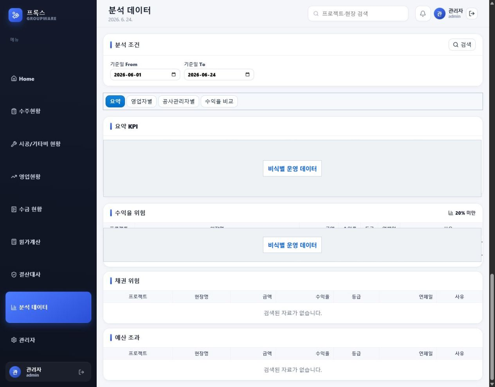

Preserve operational data
Existing business fields and source spreadsheets remain intact. Normalization and corrections are retained as lineage.
Construction Operations System
A construction operations system that connects orders, execution, costs, and closeout data in one operating flow.
Orders, material issues, construction costs, direct expenses, and payment fees originate in separate field workflows. Prox connects them at the project and item level so the field management ledger and commercial closeout records reference the same evidence.
Existing business fields and source spreadsheets remain intact. Normalization and corrections are retained as lineage.
Edits and matching decisions pass through role-based permissions, with the reviewer and timestamp retained.
Margins are calculated against execution costs that can be traced back to field evidence.
Manufacturing Data Advancement Report, Aug 2026
The report identifies direct material and unit-price links, together with post-issue logistics actuals, as the larger bottleneck. Prox treats this gap as an operating layer to be verified between cost formulas and field records.
These figures are diagnostic baselines from the report, not Prox product-performance claims. The report also identified 1,821 formula errors and 793 duplicated work-instruction key groups. Company names and non-public financial values are excluded.
ClientReact, TypeScript, TanStack Query, Zustand
ServerFastAPI, SQLAlchemy 2.0, Pydantic Settings
DataPostgreSQL, Alembic, integer KRW amount handling
DeliveryDocker Compose, pytest, ruff, Black
Product evidence
Prox brings alerts, schedules, orders, construction and other costs, and analytical data into one work flow. The screens below are captured from the product, with data cells redacted for public release.
The menu structure, table columns, search, and processing flow are from the actual product. Customer names, staff names, contract amounts, and other operating data are not shown in this public portfolio.



We compared the execution margin in commercial closeout records with the field ledger margin. The difference came from material issues that recorded quantity but were treated as zero execution-material cost in the closeout spreadsheet.
Comparison scope
4active projectsGap before correction
26.01 to 39.51%pcloseout record versus field ledgerGap after correction
0 to 0.19%pproject subtotal basisSpreadsheet calculation principle
When an item has execution history, its execution-material cost references the approval-material cost by default. Users can still adjust the value in Excel, and the execution margin reflects that adjustment immediately.
Work process
Prox work does more than reflect a field request in a screen. It identifies why data differs, preserves source records, and retains calculation rules and verification evidence so the outcome is repeatable at the next closeout.
Issued-product quantities were not sufficiently reflected in the closeout spreadsheet formula, which understated execution margin.
Product issues, the field ledger, and commercial closeout records were compared on the same project basis.
Across four active projects, the pre-correction gap was 26.01 to 39.51 percentage points.
Material, construction, direct-expense, and fee calculation paths were reviewed separately.
Field users keep their existing Excel adjustment workflow, and adjusted values flow directly into the execution-margin formula.
The business columns stayed unchanged. The closeout reference rule was strengthened instead.
The result was recalculated using the same cost basis as the field ledger without overwriting source issue records.
Formula changes and original inputs remain distinct, allowing both result and evidence to be traced.
Normalization, candidate suggestions, reviewer confirmation, correction, rejection, and feedback retention are separated so ML does not replace business judgment.
Source values, derived values, and approval decisions are retained separately. Financial data never changes without human approval.
The point is not a one-time numeric correction. It is leaving an operating rule that can discover, compare, and verify the same class of error when it returns.
Prox advancement proposal
Rather than replacing ERP or MES all at once, Prox recommends raising the reliability of current operating data in stages. When a gate is not proven, the next investment waits.
Establish a baseline for handling time, approval delay, rework, data-entry time, and record-completion rate in one operating group.
Verify and approve project, material, specification, unit, unit-price effective date, and final revision standards.
Retain issue, return, field balance, and disposal events so actual cost and standard cost differences can be explained.
Expand ML assistance for recommendations and anomaly detection only after approved, high-grade data is accumulated.
Source preservation, legal-entity and project identification, closeout margin reconciliation, and review history retain the basis of every number.
Event records from material issue through return, balance, and disposal connect actual cost formulas to closeout and reduce information gaps.
Candidate matching and anomaly signals support reviewers. They do not automatically alter or approve operational or financial data.
The recommended model keeps current AX, IT, and ML owners accountable for structure, separates drawing, BOM, unit-price, and cost verification first, and evaluates DataOps and MES operating roles at the six-month gate. Staffing and budget are re-estimated from the four-week measurement result.
Prox establishes data lineage and reviewer decisions before operating a model. Automated learning, automated scoring, and automated approval are outside this stage.
Imported files and source references are retained as unchanged evidence.
Text and units are structured with rule versions and transformation history.
Deterministic candidates and reasons are provided without automatically changing business data.
Untrustworthy source rows are separated from the normal processing flow.
Confirmation, correction, and rejection decisions accumulate with immutable feature snapshots.
Reviewer Gate Actual item identification and business changes happen only after a reviewer decision.
Audit Trail Candidates, evidence, review history, and feedback labels remain separately traceable.
Code evidence
The actual training_gate.py checks human-review labels and the review window. When evidence is insufficient, it always records that training has not started. This report does not launch a model.
"""Read-only safety gate for future candidate-ranking model training."""
T5_GATE_VERSION = "t5-readiness-v1"
MIN_REVIEW_WINDOW_DAYS = 14
POSITIVE_DECISIONS = frozenset({"user_confirmed", "user_corrected"})
HARD_NEGATIVE_DECISION = "user_rejected"
def assess_t5_readiness(...):
...
status = "BLOCKED" if blockers else "REVIEW_REQUIRED"
return {
"gate_version": T5_GATE_VERSION,
"status": status,
"training_started": False,
"blockers": blockers,
"manual_requirements": [
"Approve training explicitly; this report never starts training.",
],
}Responsibilities and deliverables
| Responsibility | Work performed | Retained deliverable |
|---|---|---|
| Operating-data reconciliation | Compared the field ledger, product issues, and commercial closeout records by project. | Cause of the margin gap and a re-verified project-subtotal result. |
| Calculation rule | Applied an execution-material cost reference rule for items with execution history to closeout output. | Margin calculations that preserve Excel adjustment authority while using the same basis. |
| Structure and verification | Kept router, schema, and service boundaries while managing changes through Alembic and tests. | A structure that preserves source business columns and supports retained lineage and regression checks. |
| ML data readiness | Separated source preservation, candidate matching, quality isolation, and confirmation, correction, and rejection feedback. | Auditable learning evidence for later recommendations and anomaly signals, without automated approval. |